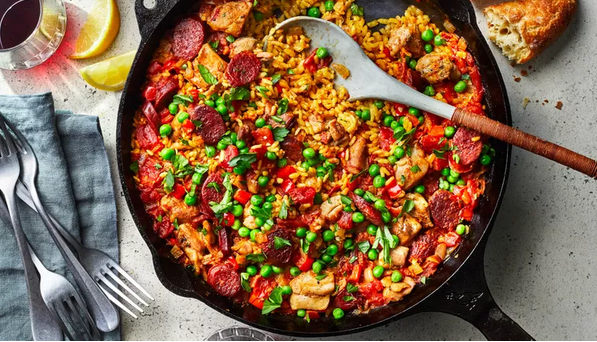

Chicken Paella Recipe

Description of Dish:
Chicken paella is a delightful Spanish dish that hails from the Valencia region.
It is a variation of the traditional paella, typically known for its seafood variety,
but this version focuses on chicken as the main protein.
Ingredients Include:
- 1 tbsp olive oil
- 2 small onions, finely sliced
- 1 fat garlic clove, crushed
- 140g cooking chorizo, sliced
- 1 tsp turmeric
- pinch of saffron
- 1sp paprika
- 300g paella rice
- 850ml hot chicken or vegtable stock
- 200g frozen peas
Steps
- Heat the olive oil in a deep frying pan over a high heat. Brown the chicken all over – don’t cook completely. Once browned, transfer to a plate.
- Reduce the heat to low, add the onions and cook slowly until softened, about 10 mins. Add the garlic, stir for 1 min, then toss in the chorizo and fry until it releases its oils.
- Stir in the spices, then tip in the rice. Stir to coat the rice in the oils and spices for about 2 mins, then pour in the stock. Bring to the boil, return the chicken to the pan and simmer for about 20 mins, stirring occasionally.
- Add the peas to the pan and simmer for a further 5 mins until the rice is cooked and the chicken is tender. Season well and serve with the lemon and parsley.